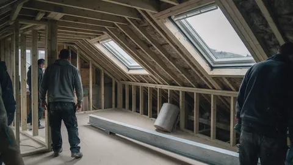
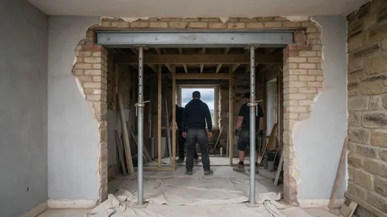
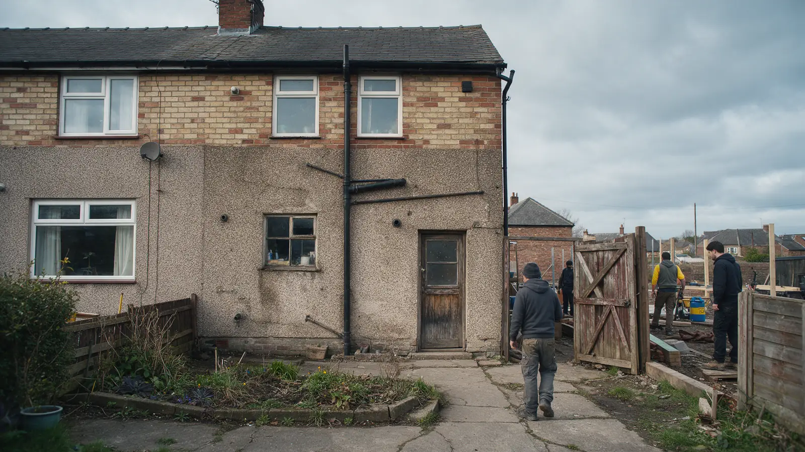
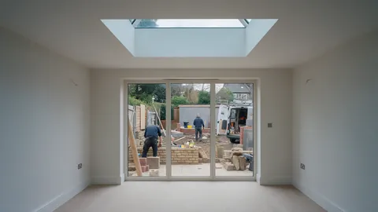
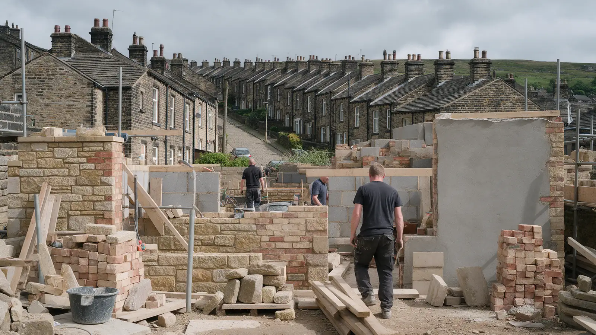
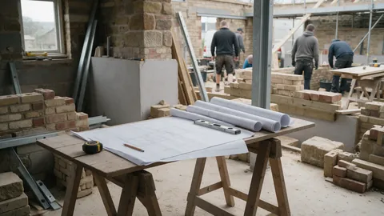
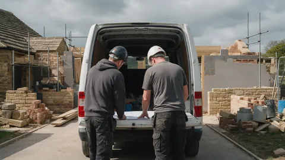

Builders and extensions · West Yorkshire
More house,
without the drama.
Extensions, conversions, knock throughs and brickwork. We tell you what the job really involves before you commit to it, and we leave the place tidy every night.
What we do
Six kinds of job.
 Generated photo
Generated photoHouse extensions
Single storey, two storey, rear and side. Footings to finished shell, with the trades behind us kept in order.

Generated photoGarage and loft conversions
The structural side: steels, floors, dormer openings and getting it weathertight before anyone else starts.

Generated photoKnock throughs and steel beams
Walls taken out properly. An engineer sizes the beam, we prop it, set it on padstones and get it seen.
 Generated photo
Generated photoRenovations and refurbishments
Tired rooms and whole houses brought back. Floors, walls, openings and plaster, in the right order.
 Generated photo
Generated photoBrickwork and repointing
New brick and stone, rebuilds and repointing, in a mortar that suits the wall instead of fighting it.
 Generated photo
Generated photoGarden walls and small structures
Walls, piers, steps, bin stores and planters. Proper footings and a coping that sheds the water.
How it works
Four steps, no mystery.
You tell us the idea
A call, the chat box or the form. Rough size, what is there now, and what you want out of it.
We come and look
We measure up, check the ground, the drains and the access, and say what we think it needs.
You get a written quote
What we will do, what is included, what is not, and roughly how long it takes Sample.
We build it
One team through the job, building control booked in, and the site cleared at the end of every day.


Illustrative, not a real job. Both pictures were generated for this demo from the same house, one before and one after, to show the kind of change an extension makes.
Before and after
The back of the house is where most of it happens.
Drag the slider. On the left, a back door onto a cracked path and a kitchen you have to go sideways in. On the right, the same house with a few more metres and somewhere to put the table.
It is an illustration rather than a real job, but it is the shape of most of the work we are asked about.
See the rest of the workOur work
Sample jobs.
8 jobs shown
Generated photoSingle storey rear extensionHalifax · sample Generated photoExtension shell going upBrighouse · sample
Generated photoExtension shell going upBrighouse · sample
Generated photoInside the finished shellElland · sampleGenerated photoLoft conversion, structural stageHuddersfield · sampleGenerated photoKnock through with a steel beamSowerby Bridge · sampleGenerated photoBack bedroom stripped and replasteredHalifax · sampleGenerated photoRepointing an old wallBrighouse · sample Generated photoGable end rebuiltHuddersfield · sample
Generated photoGable end rebuiltHuddersfield · sampleEvery job here is a made up sample with a generated picture. Tap one to see it bigger.
Where we work
Up and down the valley.
Based in West Yorkshire Sample. These are the towns we cover most. Coverage is a sample for this demo.

Generated photoWhat people say
Sample reviews.
Sample review
They turned up when they said, and the house was liveable the whole way through. The brick match on the back is spot on.
Dan, Halifax
Sample review
We wanted the wall between the kitchen and dining room out. They had the engineer's figures before they quoted, which nobody else did.
Priya, Brighouse
Sample review
Repointed the front of the house and explained why the last lot's cement was the problem. Looks like it has always been that way.
Mal, Sowerby Bridge
Sample review
The loft was the structural bit and they were clear about where their job stopped. No surprises on the bill.
Joanne, Elland
Made up for this demo. Quarrigg does not exist, so neither do its customers.
Questions
What people ask us first.
Do I need planning permission for an extension?
It depends on the size, the height and where it sits. A lot of single storey rear extensions come under permitted development, but there are limits, and they are tighter on flats, listed buildings and conservation areas.
We will tell you what we think you are looking at, but the only answer that counts comes from your council's planning team. Nobody can promise you an approval.
Do I need building regulations sign off?
Yes. An extension, a loft conversion or taking a wall out all need building regulations approval, and that is separate from planning. The council or an approved inspector comes at set stages and signs it off at the end.
We book the visits in as we go and leave the work open until it has been seen.
How long does a single storey extension take?
It depends on the size, the ground and what we find when we dig. A straightforward single storey extension is usually a few months on site, and bad ground or a drain run in the wrong place adds to that. Your quote says how long yours should take Sample.
Can we stay in the house while you work?
Most people do. We screen the work off from the rest of the house, keep one way in and out clean, and tell you up front which days will be noisy or dusty and when the water or power has to go off.
If the kitchen is coming out, we talk about a temporary set up before we start rather than on the morning.
Do you do the drawings or do I need an architect?
Either way suits us. If you already have drawings, bring them. If not, we can point you at an architect or an architectural technician we have worked with, and they do the drawings and the application.
We build what is drawn. We do not pretend to be designers.
General guidance, not advice on your job. Planning and building regulations are decided by your council, not by a builder.
Advice
Worth reading first.

Generated photoPlanning or permitted development: the plain version
Two different routes, often confused. Here is the difference, in the order it matters.
Generated photoWhat a party wall agreement is, and when you need one
If you are building up to a shared wall or digging near next door, this one catches people out late.

Generated photoQuestions to ask before you take on a builder
Eight questions worth asking any builder, including us, before you shake on it.
About this demo
What this demo shows.
Quarrigg is not a real firm. The site is here to show a builder what Clockwork AI builds, in six parts.
No prices here. If you want to know what it would cost for your firm, that is a conversation, not a web page. The Clockwork number is in the bar at the top of the page.
Thinking about an extension?
Tell us roughly what you want and we will come and look. You get a written quote, not a number over the phone.